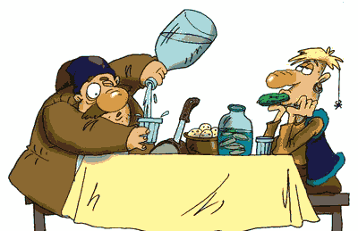
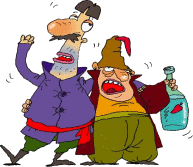

Назар-Смiливий (2)
За село вибрався, якусь дорогу обрав – їде, а куди – невтямки.
Їде-їде: озирнувся—села не видно вже. Пойнялося серце страхом.
Аби дух cобі підняти, почав він щось під ніс мурмотіти—мугиче, сам до себе говорить, вислюка шпетить.
Що далі їде, тим більш страхається; з більшого страху він голос підвищує – верещить, горлає! Вислюк і собі заревів!..
Од того гвалту-граю птахи з ближчих дерев розлітаються, зайці по кущах розбігаються, жаби з трави у воду кидаються...
Назар від cвого ж голосіння ще більше голову втрача, а як вже у ліс заїхав, то ніби з-під кожного дерева, з будь-якого куща, з-за кожного каменю—звідусіль!—оце зараз на нього звірюка кинеться, або вже розбійник.
Нажаханий, таке підвів він валування - ажно у вухах дзеленьчить.
І нагодилося ж, що саме під той час якийсь тюхтій-селянин їхав через ліс конем. Як зачув той гвалт страшенний, спинився.
- Вай,- каже,- оце встряв я у халепу, то ж ніхто більш, як розбійники...
Коня кинув, сам до лісу і – ну, п´ятами кивати! Втік...
Ласкава доля! Назар-Сміливий, валуючи, підходить—ти ба!—посеред дороги кінь засідланий стоїть, його дожидає.
З вислюка він злазить, на коня сідає, далі рушає.
* * *
Довго їхав чи ні, йому вже краще знати. Заїхав до села якогось. Він села не знає село – його.
Чи туди, чи сюди?
Од якоїсь хати музику чути – погнав коня туди.
Під´їхав і утрапив на весілля.
- Добрий день вам.
- І тобі добра від Бога, просимо до нас з дороги.
- Та заходьте ж! Заходьте, гість-бо від Бога.
І ведуть, з отим прапорцем його, у голові столу приміщають. А там таке вже ласе й гарне перед ним понаставляли—і наїдків, i напоїв.
Весільчани взнать цікаві – хто цей дивний незнайомець?
Один, що сидів ген наприкінці, свого сусіду–штурх!—на гостя кивнув, розпитує; той подальшому показав, запитав.
Отак, по черзі—один одному покивав, одне в одного спитав—прилинуло до голови столу, де староста сидів. А староста і примудрився вичитать на прапорці у гостя:
Назар-Сміливий: сила й міць!
Раз лупоне – юрма з копиць!
Вичитав і з острахом переказує своєму сусідові, той наступному, той ще далі, третій - четвертому.
Отак доходить ген до дверей і все весілля вже аж гуде: "Ти-ба! Цей новий гість ніхто інший, а сам Назар Сміливий: сила й міць! Раз лупонє – юрма з копиць!"
- Отакої! Це ж сам Назар-Сміливий!..- гукнув якийсь хвалько.- А як вже ж змінивсь! Навіть я насилу впізнав...
І знаходяться вже люди з готовими оповідками про його велики подвиги, i як вони, було, з ним колись...
- Як же ж такий чоловік сам-один, без слуги?- дивуються незнайомі.
- А то така вже звичка, не до шмиги йому слуги. Якось і я спитав, а він на те: "Що з отих слуг? Мені й так увесь світ годить-прислуговує."
- А чого ж це шаблі доброї не має? Таку і ржаву залізяку почепив при боці.
- В тім-то й річ, що отим шматком і ржавим шварконе і - юрбу на шмаття: дрібніше, ніж шаблюкою. Бо з нею, бач, i простий герой зуміє.
І задурені люди встають, за здоров´я Назара-Сміливого п´ють. З по-між них розумник виходить, звертається до Назара з промовою.
- Ми,- каже,- давно чули про славу твою велику, прагли також й вид уздріти, аж ось і дочекалися – тут ти, з нами. Бачимо на власні очі.
Назар стогне, рукою одмахуеться.
Присутні значуще перезираються, підкивують; знаємо, мовляв, як стогін цей і помах розуміти треба.
Там ще й співець знайшовся, миттю пісню склав, проспівав:
Сповнив щастям ти нам зір,
Беркут дужий наших гір,
Світу гордість і кумір,
Назар-Сміливий: сила й міць!
Раз лупонеш - юрма з копиць.
Скривджених ти захисник,
Вибавитель від мук злих,
Од неправих рятівник,
Назар-Сміливий: сила й міць!
Раз лупонеш - юрма з копиць.
Прапор твій нас надихає,
Шабля пломениста сяє,
Кінь, мов блискавка, гасає,
Назар-Сміливий: сила й міць!
Раз лупонеш - юрма з копиць.
І хмельні весільчани, як порозходились, то рознесли по всіх-усюдах, що їде Назар-Сміливий: сила й міць! Раз лупоне - юрма з копиць.
У всіх тількі й розмов, що про геройства його дивовижні, грізний вигляд його розписують й усім новонародженим ім´я дають – Назар.